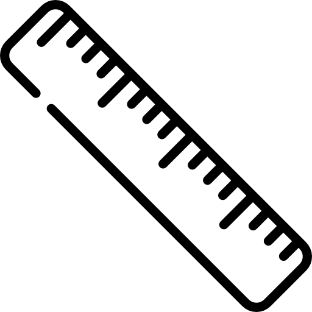
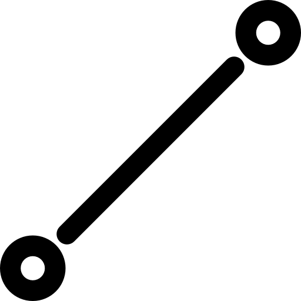
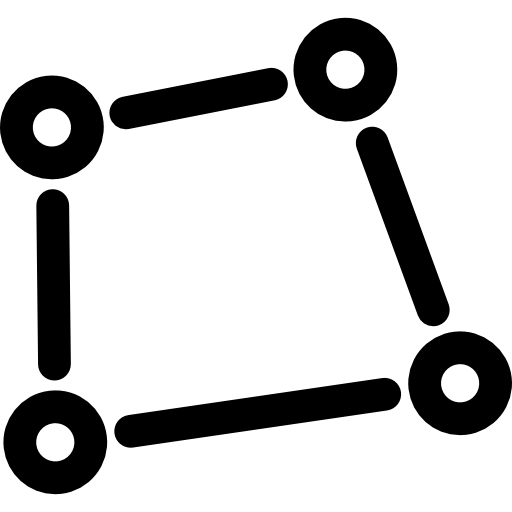
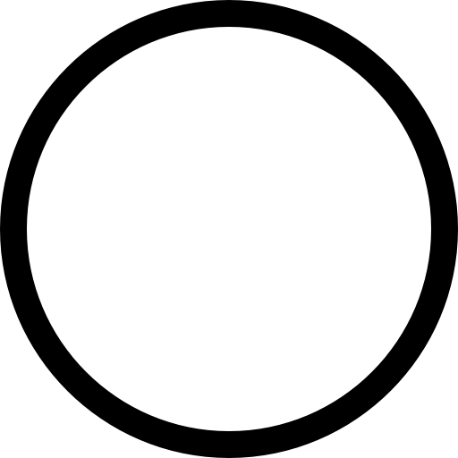

LOGIN AS ADMIN
EXPORT
LAYERS
PRINT MAP
EXPORT
LAYERS
PRINT
ACTIONS
×
SHOW PROJECT NAMES
SHOW COUNTIES
FILTER BY STATUS
COMPLETE
+
Water
Sanitation
Boreholes
Dams
Irrigation
Other
ONGOING
+
Water
Sanitation
Boreholes
Dams
Irrigation
Other
PLANNING & DESIGN
+
Water
Sanitation
Boreholes
Dams
Irrigation
Other
FILTER BY COUNTY
All
Nyeri
Embu
Meru
Kirinyaga
Tharaka Nithi
BASEMAP
+
Clean (Light)
OpenStreetMap
Google Hybrid
Google Satellite